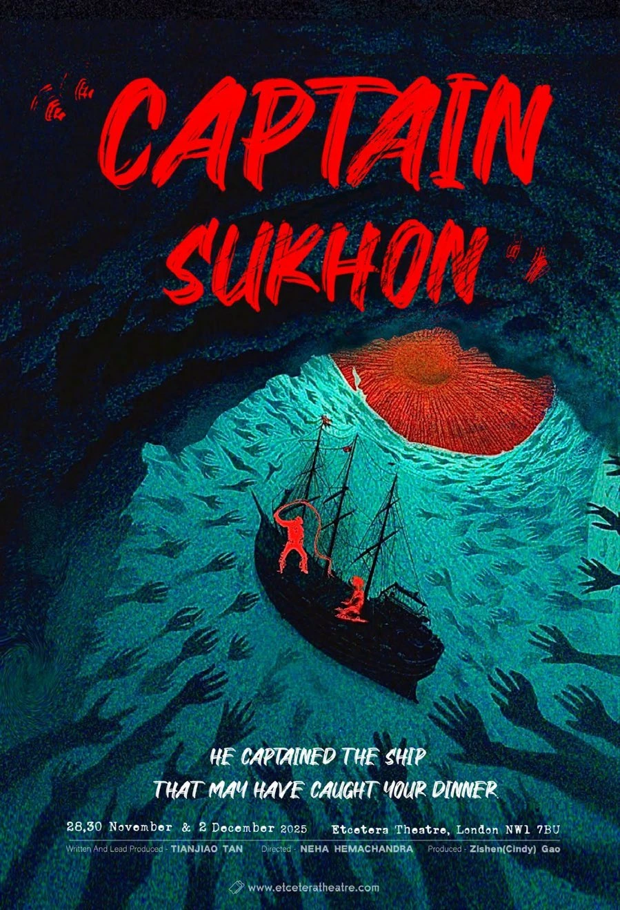
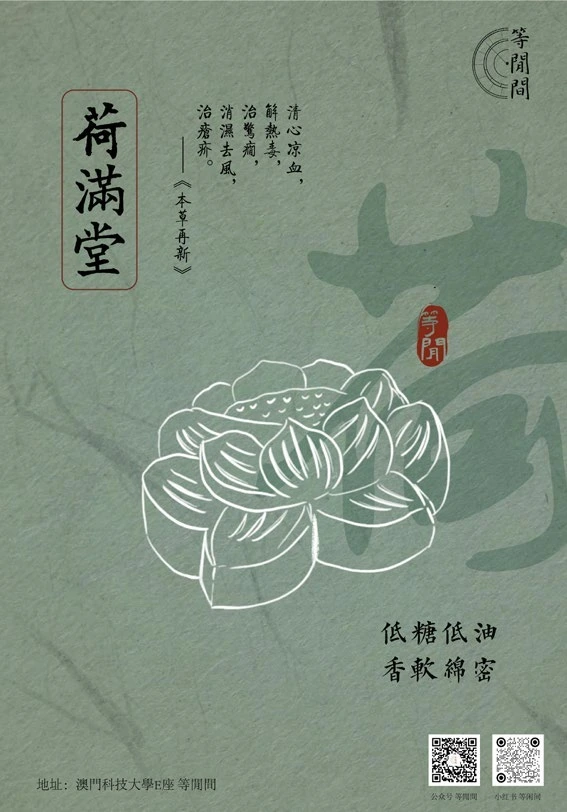
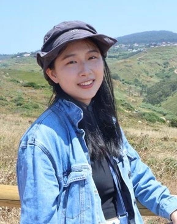

把年轻人的职场成长，变成一场打怪升级的冒险。
✦ IDEAS, WORDS & A LITTLE MAGIC一份持续生长的创意手账 / VOL. 01



好奇心
永不打烊 ↗
a storyteller,永不打烊 ↗
in many forms.
向下探索，故事才刚开始 ↓策划 / 文案 / 影像 / 表达
01 / ABOUT ME先认识一下吧
表达的方式很多，
我想多试几种。
我是燕骁然，也可以叫我 Sherry。
文案、视频、图片多面手，相信 storytelling 的重要性，
一切都是表达与沟通的工具。
澳门科技大学 本科↗伦敦大学国王学院 硕士
我的创意工具箱 ↙
内容策划社媒运营品牌文案视频脚本戏剧制作AIGC 探索
2015 年开始接触新媒体；从微博、公众号，
一路尝试到直播、播客和 AI 创作。
135,000+官博日常话题累计阅读
15+原创推文，多种内容场景
5 场独立策划并引导应用戏剧
2 部伦敦独立戏剧创意制作
02 / SELECTED CASES策略 × 内容 × 落地
想法，不止于想。
点开，看看故事的背面 ↙01
从宋代画作里的一场梦，到校园糕点品牌的诞生。
让舞台上的故事，被舞台之外的人听见。
HOW I CONNECT THE DOTS每个好故事，
每个好故事，
都从一个“为什么”开始。
01 / INSIGHT
先理解人
找到受众真实的需要，
和那些还没被说出的情绪。
02 / STORY
再找到故事
把洞察变成创意，
让品牌拥有可感知的表达。
03 / CONNECTION
最后，让它发生
用合适的内容和媒介，
让故事与人真正相遇。
03 / WORDS MATTER文字，也有温度
在字里行间，
建立连接。
同一个表达欲，不同的语气。
从艺术首饰到体育赛事，
为每个故事找到恰好的说法。
01BRAND COPYWRITING把艺术，戴进日常。+
英国艺术博物馆 V&A 联名首饰种草文案。以馆藏历史与纹样故事切入，让首饰成为艺术的当代载体，回应自用与送礼的情绪。
02SEO CONTENT让答案，出现在搜索里。+
BC 雅思 SEO 长图文。围绕考生对 BC、IDP 和 UKVI 的疑问，进行竞品调研、利益点提炼与关键词布局。
03B2B COMMUNICATION把项目成果，讲成合作价值。+
2024 年国际乒联男女世界杯与 2023 年澳门世界乒乓球锦标赛项目文案。面向品牌赞助商及政企文旅客户，呈现展示执行、品牌触达与城市营销价值。
04VIDEO SCRIPT我与我相处。+
泡泡玛特 DIMOO 视频脚本创作。以“情绪没有好坏之分”为洞察，描绘与自己、与情绪相处的过程。
“不要抗拒，不必逃离，与它相处。”
04 / MOVING STORIES让情绪，在画面里流动
故事的另一种形状。
Lights, camera, feelings.个人纪录片 · 在真实中寻找自己的叙事。
剧宣短视频 · 从一只海鸥的视角说起。
05 / LET'S MAKE SOMETHING下一页，和你一起写
好故事，
从聊聊开始。
期待把下一个灵感，
变成我们共同的作品。